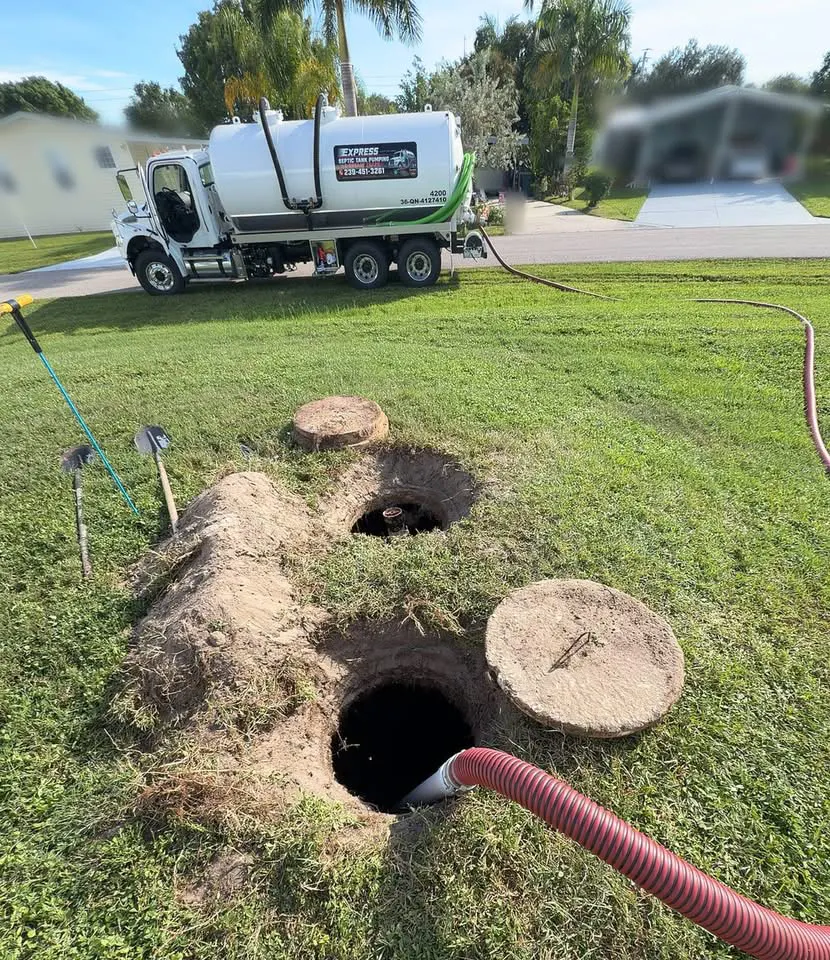

Express Septic Tank Pumping
Septic Tank Pumping in Marco Island, FL

Honest, reliable and fair — great customer service is our top priority.
Need septic tank pumping in Marco Island, FL? Express Septic Tank Pumping serves homes and businesses in Marco Island and across Collier County. Marco Island is the largest barrier island in Florida's Ten Thousand Islands area, south of Naples.
Waterfront and island properties need septic maintenance done right to protect nearby waterways.
Septic emergency in Marco Island? Night or day, we're available for emergencies. For routine service, we can often make it same day when possible. Call (239) 451-3261.
Septic Tank Cleaning Marco Island
Septic tank cleaning in Marco Island removes the sludge and scum that build up over time and helps protect your drain field.
Septic Service in Marco Island, FL
For septic service in Marco Island, FL, tap to call or book online.
Septic Services in Marco Island
- Septic Tank Pumping in Marco Island
- Residential Septic Tank Pumping in Marco Island
- Commercial Septic Tank Pumping in Marco Island
- Septic Inspections in Marco Island
Signs Your Marco Island Septic Tank Needs Pumping
Slow drains, gurgling, odors outside, or soggy ground over the drain field. If it's been 3–5 years since your last pump-out, it's time to call.
Back to Express Septic Tank Pumping home · Call (239) 451-3261 for a quote in Marco Island.
Nearby Areas We Serve
Reviews
Read what customers say on Google
Our reviews live on our Google Business Profile, where you can read them in full or leave your own.
Open our Google reviewsTalk to Express about your tank
Night or day, we're available for emergencies. Call (239) 451-3261. For routine service, we can often make it same day when possible.